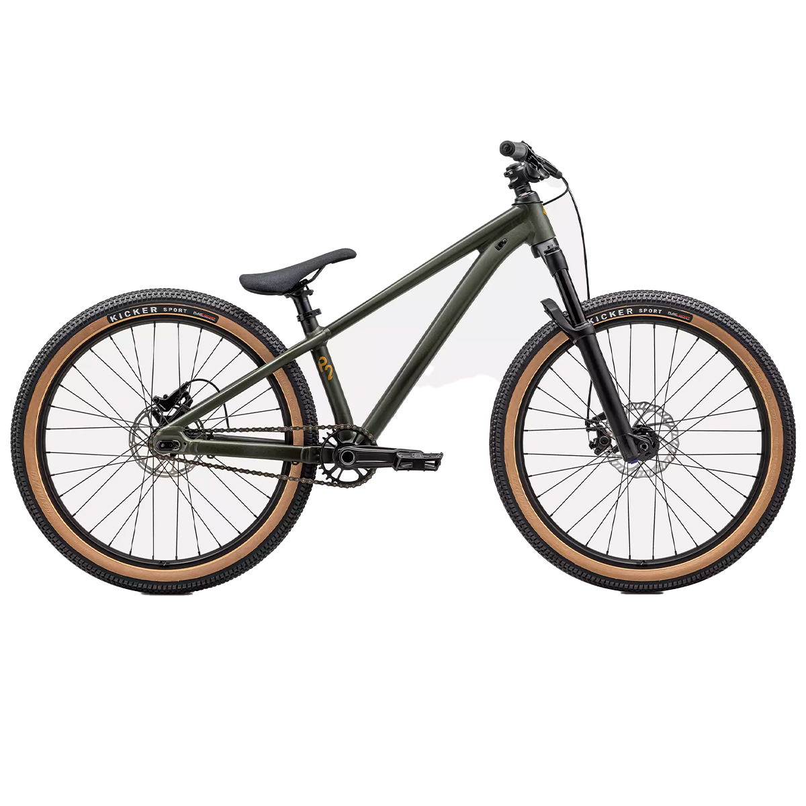

Bicicleta P.2
Versátil single-speed ou cassete, com quadro A1 Premium Alloy e freios Sram Level T para performance urbana.
Especificações Técnicas
- Quadro: Specialized P.2 A1 Premium Alloy, 24", Fully Butted, tapered head tube, internal routing, 12x148TA dropouts.
- Abraceadeira do canote: Alloy 34.9mm single-bolt.
- Garfo: Manitou J-Unit Comp 24", 100mm travel, 15x110mm thru-axle.
- Freios: Radius CX7 mecânico dianteiro 160mm / Sram Level T hidráulico traseiro 160mm.
- Transmissão: Single-speed 13T ou microSHIFT 1x cassette; corrente KMC Z1.
- Pedivela: Specialized P.series forged, 140mm, 52mm CL.
- Movimento Central: BSA 73mm.
- Rodas & Pneus: Aros Specialized P.Series 24", cubos selados, pneus Kicker Sport 24x2.1".
- Cockpit: Mesa Specialized alloy Trail Stem 35mm; guidão P.Series MTB 750mm; manoplas lock-on; selim P.series.
- Peso: 10.5kg aprox.